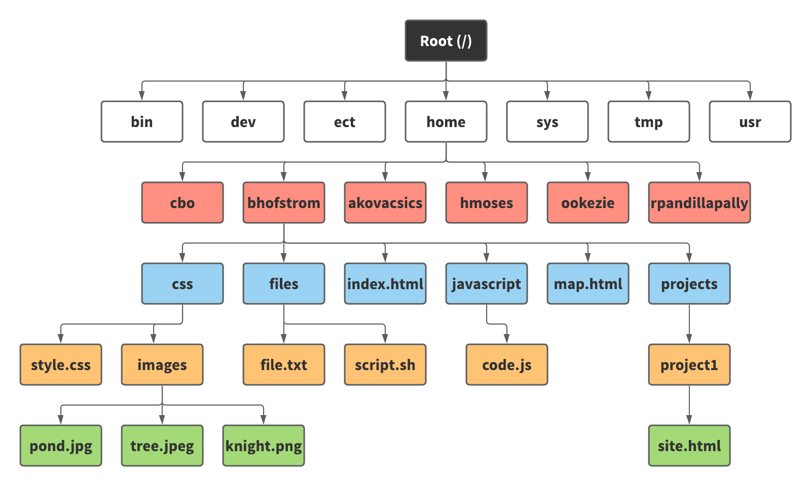

Section 2: UNIX Structure
Feel confident about your knowledge already? Check your understanding and take the quiz for this tutorial!
Now that we have a basic understanding of what UNIX is and what we will be using UNIX for, let's dive deeper into its overarching structure. Understanding UNIX’s file structure is paramount in understanding how to properly organize your files and therefore display your webpages!
The File Structure
UNIX prides itself on having a very hierarchical file structure. Think of the UNIX structure as a family tree, with millions of branching and interconnecting pathways. At the top of this tree is the root. It is here where all the branches stem. The image below shows a representation of the UNIX file structure!
Processes and Files
In order to fully comprehend this tree-like structure, you must understand the following idea: In UNIX, everything is either a process or a file.
Processes refer to the instance of a currently executing program. A perfect example of this being the use of commands in the UNIX shell. Whenever you type in a UNIX command, you are executing a program to interpret and run the command you desire!
Files on the other hand are a collection of data. These are created using a user's preferred text editor and or compiler and take up a form of physical space on a computer's storage devices via a designated file type.. Some file types include .txt, .mp3, .exe, .html, and .css files. In UNIX, directories, or folders, are considered files but they have the important job of storing and grouping other files together. In addition to this, in UNIX, all of your PC hardware components are represented as files in the system hierarchy. This way, when the UNIX system needs to communicate with some portion of your system hardware, it can through its file equivalent.
Understanding everything in the UNIX file tree is initially a file or a process is your first step to realizing how simple yet powerful the UNIX environment can be. In the next chapter, we will begin to cover some basic UNIX commands so buckle up and get ready to master UNIX!